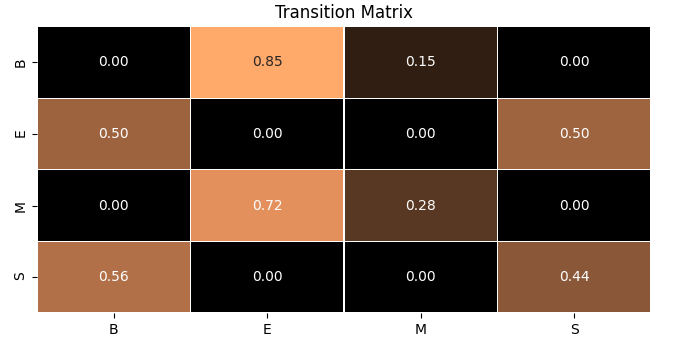

序列标注之NER、CWS经典模型HMM实现
序列标注之NER经典模型HMM实现
在文章NLP任务：序列标注提及很多解决NER和中文分词任务的方案，唯独经典的HMM没有详细展开。
序列标注
三类常见的词法分析：
- 中文分词
- 实体命名识别
- 词性标注
简单来说，中文分词负责语义的基本间隔，词性标注进行浅层的标注，实体命名识别识别更粗粒度的专有名词。
分词中BMES序列标注示意图，

HMM的参数学习包括状态转移矩阵和观察矩阵，由于数据带标注，都可以使用最大似然估计获得，这些内容在过去的文章：
已经有所提及，不过当时并没有拿来做序列标注上的实践。今天这里补充HMM的实现和实践。
参数估计
状态转移矩阵参数估计，$a_{ij} = P(i_{t+1} = q_{j}|i_{t}=q_{i})$
其中$i,j$取值均在$[1, N]$范围内。
观察矩阵的参数估计，
其中$j \in [1, N], k \in [1, M]$，通常在实现的时候使用稀疏形式，如字典来存储参数。HMM需要考虑OOV问题，即测试集有的字并没有出现在训练集里， 这种情况下，通过观测概率矩阵是无法获得OOV对应的各种状态的概率分布。HMM的OOV问题的解决方案是，把OOV对应的状态的概率分布设为均匀分布。
初始状态$\pi = (\pi_{1}, \dots, \pi_{N})$，其中
即所有待学习样本的初始状态的频率。不过初始状态在这里用不上，在生成任务上才需要。
实现和效果（更新）
源码地址：hmm-ner-cws，包括HMM模型用于中文分词和命名实体识别例子。通过监督学习计算到参数后，输入观察序列到模型中，模型可以计算每个时间步的观察值所对应的各个状态的scores，整个观察序列如此计算即可获得path scores，在观察到第$j$个时间步$o_j$情况下，各个状态$i$的概率$s_{ij}$为，
然后使用状态转移矩阵和viterbi解码即可获得最大分值路径。
命名实体识别例子，
1 | $ python3 task_ner.py |
NER任务有规则性较强的实体甚至连HMM都不需要，如ISBN、商品编号网址、E-mail、电话号码可以直接使用正则表达式来提取。但是对于命名更灵活复杂的实体，则需要更复杂的模型，如实体类别为ORG，中央和党中央都是实体。
BIOES 释义如下：
| BIOES | 解释 |
|---|---|
| B | Begin，表示开始 |
| O | Other，表示其他，用于标记无关字符 |
| E | End，表示结尾 |
| S | Single，表示单个字符 |
| I | Intermediate，表示中间 |
可视化状态转移矩阵可以检验模型是否学习充分，下面可视化一下NER中HMM的状态转移矩阵：

可以看到学习到的状态转移矩阵整体上算合理的。注意到不同类别的实体也存在连续的情况，如I-LOC到B-ORG的转移概率有1%。
中文分词例子，
1 | $ python task_cws.py |
以上分词效果还算可以，能够把新词灰犀牛识别出来，但是并没有把新词黑天鹅识别出来。
| BEMS | 解释 |
|---|---|
| B | Begin，表示开始 |
| M | Intermediate，表示中间 |
| E | End，表示结尾 |
| S | Single，表示单个字符 |
状态矩阵的可视化，

可以看到学习到的状态转移矩阵是合理的。
项目实现源码地址：hmm-ner-cws。
可能根据需要持续更新~
对比jieba分词
这里的HMM使用ctb6的标注数据训练参数，jieba的HMM自带状态矩阵和观察矩阵，以及一个非常大的词表。
1 | import jieba |
部分分词结果如下，
1 | $ python3 compare_jieba.py |
对于新词，黑天鹅这里的HMM能够识别出来，而jieba并没有，而灰犀牛则正好相反。整体上可以看到，这里HMM分词效果不错，且没有带额外的词表。
总结
HMM的实现很简单，只需要用统计的方法计算状态转移矩阵和观察矩阵即可，后者往往是稀疏的，可以使用字典来存储参数。对于状态序列的预测，通过观察序列计算path scores，然后viterbi解码即可获得最大分值路径。
转载请包括本文地址：https://allenwind.github.io/blog/8750
更多文章请参考：https://allenwind.github.io/blog/archives/